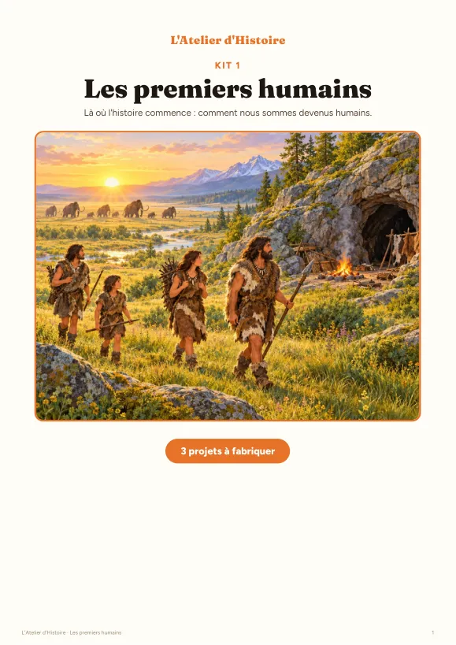
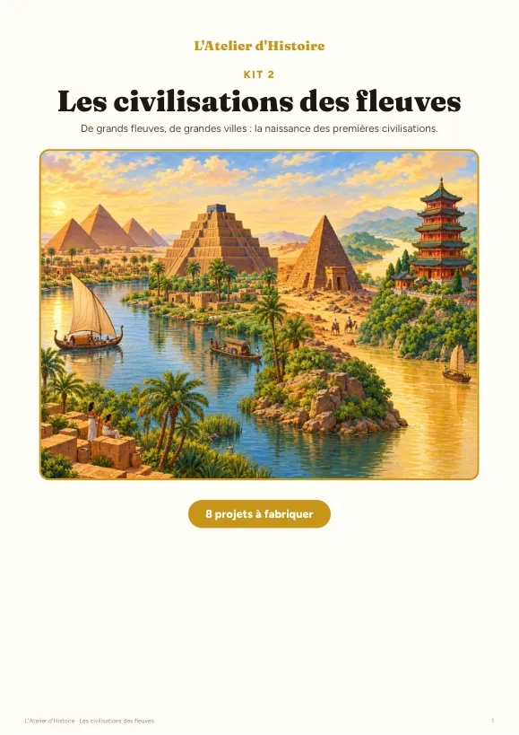
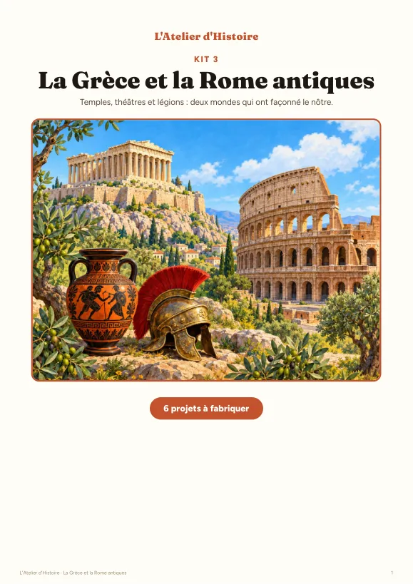
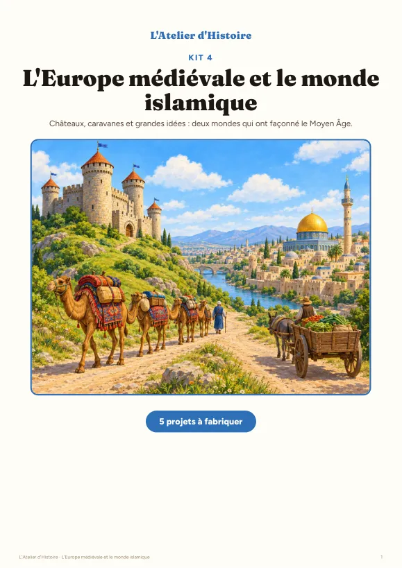
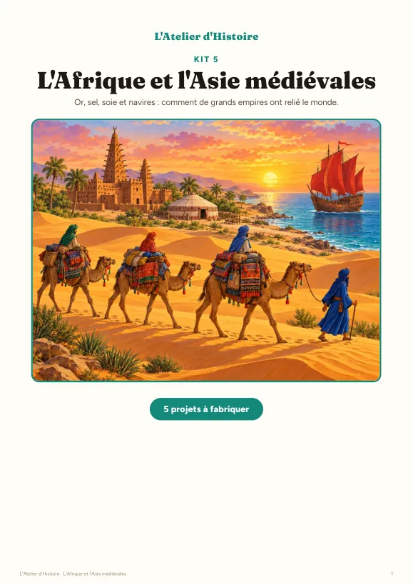
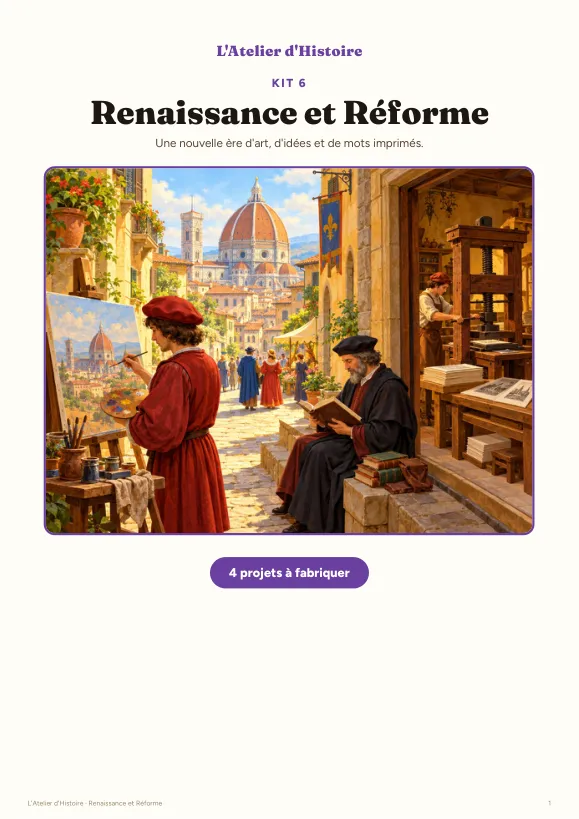
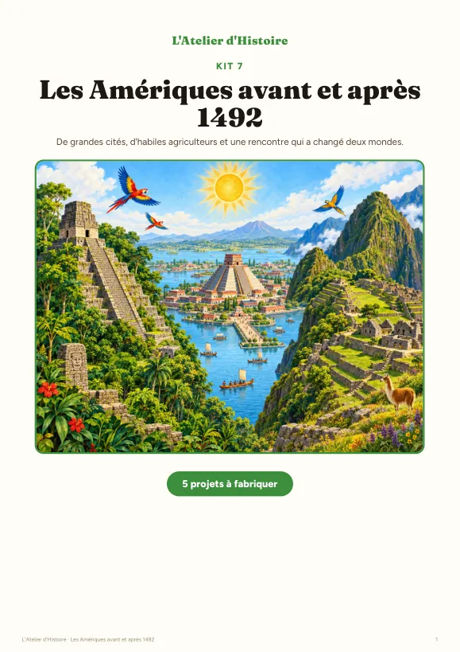
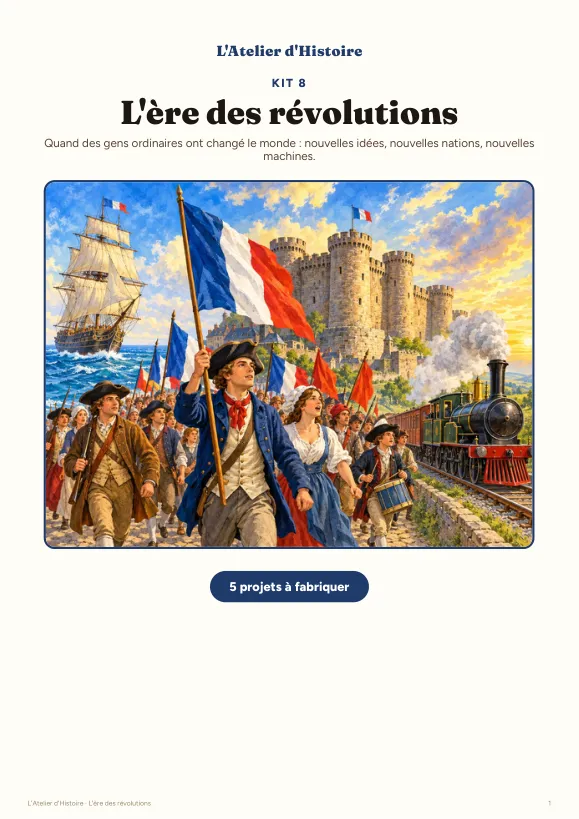
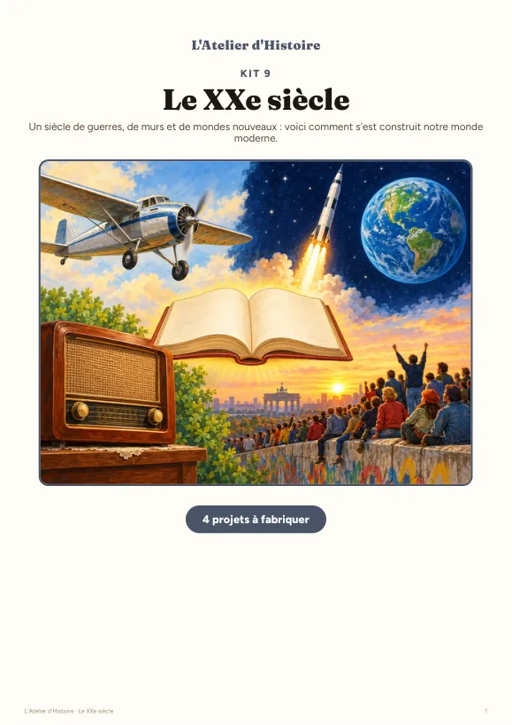

Kit 1
Vous trouverez ici les 9 kits en PDF. Chacun existe en deux versions : en couleur, et en noir et blanc pour que les élèves les colorient. Téléchargez-les, imprimez-les autant de fois que nécessaire, et c’est parti pour la classe.









Imprimez sur du papier A4. Pour les maquettes 3D, un papier plus épais (160–200 g) est idéal, mais le papier ordinaire fonctionne aussi.
Commencez par le kit 1, ou par la période que vous étudiez en ce moment. Chaque kit commence par un guide de l’enseignant.